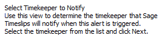
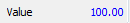

from sikuli import* import logging import os import subprocess #import Alpha_Beta import logging reload(logging) import datetime import TABFunction import shutil SCR0 = Screen(0) SCR1 = Screen(1) def alerts_regression(): logging.debug('- - - - - - - - - - - - - - -') logging.debug(' ') logging.debug('----Alerts') logging.debug('- Create slip for Alert') keyDown(Key.ALT) type('c e m') keyUp(Key.ALT) wait(Pattern().similar(0.92), 30) type('n', KeyModifier.CTRL) wait(, 30) type('s.') type('n', KeyModifier.ALT) type('t') type('n', KeyModifier.ALT) wait(.5) type('s', KeyModifier.ALT) wait(.5) type('n', KeyModifier.ALT) wait(.5) type('n', KeyModifier.ALT) wait(.5) type('v') wait(.5) type('n', KeyModifier.ALT) wait(.5) type('t') wait(.5) type('n', KeyModifier.ALT) wait(.5) type(Key.DOWN) wait(.5) type(Key.TAB) paste('1') type('n', KeyModifier.ALT) type('f', KeyModifier.ALT) waitVanish() click(Pattern().similar(0.97)) wait(, 30) type(Key.LEFT + Key.LEFT) assert exists() type(Key.ENTER) waitVanish() type('w', KeyModifier.CTRL) logging.debug('- Trigger Alert') type('m', KeyModifier.CTRL) wait(Pattern().similar(0.94), 30) type('n', KeyModifier.CTRL) wait(Pattern().similar(0.93), 30) type(Key.TAB) type('s. robertson') type(Key.TAB) type('sikuli') type(Key.TAB) type('sikuli') for x in range(1, 8): TABFunction.tab(x) paste('1') for x in range(1, 8): TABFunction.tab(x) paste('100') wait(Pattern().similar(0.95), 30) type('s', KeyModifier.CTRL) if exists(Pattern().similar(0.91)): type('n') waitVanish(Pattern().similar(0.91)) logging.debug('- Alert Trigger') wait(, 30) logging.debug('- Alert Remind 1 min') type(Key.TAB + Key.TAB) type('1') keyDown(Key.SHIFT) type(Key.TAB) keyUp(Key.SHIFT) type(Key.ENTER) waitVanish(Pattern().similar(0.94)) type('w', KeyModifier.CTRL) wait(Pattern().similar(0.93), 200) logging.debug('- opening Slip from Alert') for x in range(1, 4): TABFunction.tab(x) type(Key.ENTER) wait(Pattern().similar(0.92), 30) type(Key.F4, KeyModifier.CTRL) waitVanish(Pattern().similar(0.92)) keyDown(Key.SHIFT) type(Key.TAB + Key.TAB + Key.TAB) keyUp(Key.SHIFT) logging.debug('- Dismissing Alert') type(Key.ENTER) waitVanish(Pattern().similar(0.93)) click() wait(, 30) keyDown(Key.ALT) type('c e m') keyUp(Key.ALT) wait(Pattern().similar(0.92), 30) type(Key.DELETE, KeyModifier.CTRL) wait(, 30) type('y') waitVanish() logging.debug('- 2nd Alert Rule Creation') type('n', KeyModifier.CTRL) wait(, 30) type('n', KeyModifier.ALT) type('f') type('n', KeyModifier.ALT) wait(.5) type('s') wait(.5) type('n', KeyModifier.ALT) wait(.5) type('v') type('n', KeyModifier.ALT) wait(.5) type('t') wait(.5) type('n', KeyModifier.ALT) wait(.5) type(Key.DOWN) wait(.5) type(Key.TAB) paste('1') type('n', KeyModifier.ALT) type('f', KeyModifier.ALT) waitVanish() click(Pattern().similar(0.97)) wait(, 30) type(Key.RIGHT + Key.RIGHT) assert exists(Pattern().similar(0.92)) type(Key.ENTER) waitVanish() type('w', KeyModifier.CTRL) logging.debug('- Trigger Alert') type('m', KeyModifier.CTRL) wait(Pattern().similar(0.94), 30) type('n', KeyModifier.CTRL) wait(Pattern().similar(0.93), 30) type(Key.TAB) type('s. robertson') type(Key.TAB) type('sikuli') type(Key.TAB) type('sikuli') for x in range(1, 8): TABFunction.tab(x) paste('1') for x in range(1, 8): TABFunction.tab(x) paste('100') wait(Pattern().similar(0.95), 30) type('s', KeyModifier.CTRL) if exists(Pattern().similar(0.91)): type('n') waitVanish(Pattern().similar(0.91)) type('w', KeyModifier.CTRL) wait(1) assert exists(Pattern().similar(0.91))